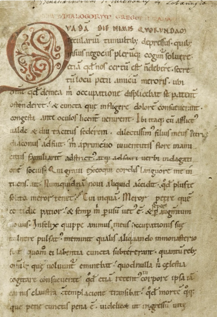
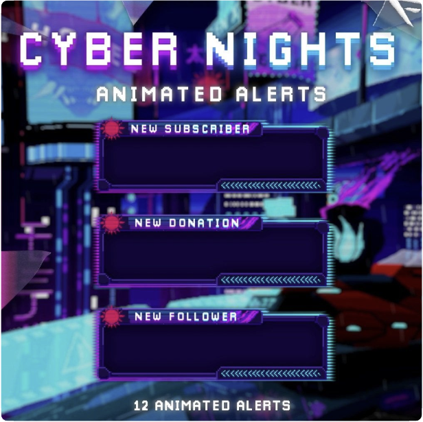

Welcome to the GastroLit Documentation. This page provides information on the project's themes, design choices, and how they influence the user experience.
GastroLit offers four distinct themes, each crafted to immerse users in a peculiar visual experience. These themes are more than just aesthetic variations: they transform the way content is perceived, enhancing the storytelling and cultural depth of the project. Designed to follow a chronological progression, the themes guide users through different historical and stylistic periods. Manuscripta evokes the rich textures of medieval manuscripts, Futurism embraces the bold typographic innovations of the early 20th century avant-garde, Cyberpunk channels the neon-drenched digital aesthetics of the 1980s and Futuristic envisions a sleek, high-tech design inspired by speculative sci-fi worlds. Each theme invites users to explore Italian literary gastronomy through a curated stylistic lens, connecting past, present, and imagined futures.
Step into the world of illuminated manuscripts with the Manuscripta theme, where ancient calligraphy and parchment textures come together to recreate the essence of historical literary craftsmanship. Inspired by the aged elegance of medieval scriptoriums, this theme transports you to a time when scribes meticulously transcribed knowledge onto richly decorated scrolls and codices.
textured-paper.png) with a warm, aged-paper tone (#fae4be).#3a302a), mimicking medieval handwritten text.The Cyberpunk theme transforms the interface into a dystopian, neon-infused experience. Designed with vibrant neon glows, stark contrasts, and sleek digital typography, this interface pulsates with the energy of a futuristic metropolis. Every element is infused with hyper-stylized luminescence, evoking the holographic billboards and electrified cityscapes of a cybernetic future scenario. Immerse yourself in the postmodern digital realm where neon lights cut through the darkness and technology shapes the landscape.
#0d0d0d) to maximize neon contrast.#00ffcc), Hot pink (#ff0080), and Vibrant yellow (#ffbf00).| Feature | Manuscripta | Cyberpunk | Futirism | Futuristic |
|---|---|---|---|---|
| Font Style | Medieval serif & calligraphy | Digital sans-serif & monospace | ||
| Color Palette | Earthy browns, parchment, golds | Neon cyan, hot pink, deep black | ||
| Navbar Design | Parchment-textured, brown borders | Neon gradient, glowing text | ||
| Interactive Elements | Hand-drawn buttons, parchment texture | Glowing buttons, neon highlights | ||
| Overall Experience | Feels like reading an ancient manuscript | Feels like using a cyberpunk interface |
Each theme provide a unique visual journey, allowing users to experience GastroLit in contrasting historical and futuristic settings.